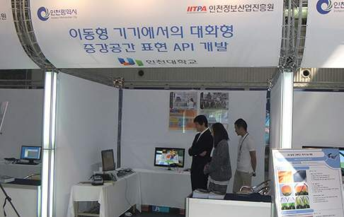
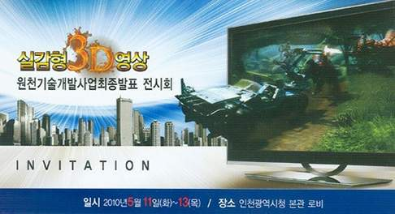

ecl news & announcements
Our lab participates in the final year project exhibition
실감형 3D영상 원천기술 개발 사업 전시회 참가
'깜짝깜짝' 실감나는 영상체험 - 인천진흥원, 내일까지 3D원천기술사업 전시회
차세대 신성장 동력인 디지털 콘텐츠 기술을 한자리에서 볼 수 있는 전시회가 열린다. 인천정보산업진흥원은 "지역특화 연구사업으로 5년동안 진행해 온 '실감형3D영상원천기술개발사업'을 완료하고, 관련 제품 전시회를 11일부터 13일까지 3일 동안 인천시청 본관 1층에서 갖는다"고 11일 밝혔다. 진흥원은 게임, 영화, 애니메이션 등 기술 수요가 큰 디지털 콘텐츠 기반 기술을 확보하기 위해 지난 2005년부터 국·시비를 포함한 88억원의 예산을 들여 이 사업을 추진했다. 지역 내 6개 기업, 3개 대학, 연구소 등에서 100여명의 인원이 이 사업에 참여해 실감미디어 데이터를 생성, 처리, 저장, 전송, 재현할 수 있는 실감형 3D영상 분야의 핵심 원천기술을 개발하고 총 46건의 특허 출원과 25건의 특허 등록, 24건의 사업화 실적을 냈다. 이 같은 성과에 힘입어 인천은 선진국이 독점한 3D시장으로의 진입 장벽을 해소하고, 돌파구를 마련했다는 평가를 받고 있다...
인천대 박종승 교수팀은 차세대 IT기반 기술을 확보하기 위해 증강현실 엔진을 개발했다. 증강현실 주석자가 내장된 모바일 기기를 통해 우리 주변의 생소한 건물이나 지역정보를 3차원적으로 제공해 주는 실외현장 가이드 시스템이다...
진흥원은 이번 사업을 계기로 관련 산업의 연구개발이 활성화되고, 공동·협력연구가 활발해질 것으로 보고 있다. 이에 따라 고급인력이 유입돼 지역 연구개발의 기반이 강화될 것으로 기대하고 있다. 또한 2014년 아시안게임, 인천로봇랜드, 파라마운트무비파크 등에 개발된 기술과 제품이 활용될 것으로 예상하고 있다.
from 경인일보 2010.05.12
인천시, 3D 원천기술 확보 '큰 성과'
인천시가 차세대 신성장 동력인 디지털 콘텐츠 분야 경쟁력을 높이고 게임·영화·애니메이션 등 기술 수요가 큰 디지털 콘텐츠 기반 기술을 확보하기 위해 추진한 ‘실감형 3D영상 원천기술 개발사업’이 큰 성과를 거두고 막을 내렸다...
박종승 인천대 교수는 교육·문화 등 다양한 분야에 응용할 수 있는 증강현실 엔진을 개발했다...
지역 기업들도 이 프로젝트를 통해 다양한 실감형 3D 기술을 개발하거나 확보했다...
from 전자신문 2010.05.12

실감형 3D영상 원천기술 개발 사업 전시회 안내
지식경제부와 인천광역시의 지원으로 추진된 실감형 3D영상 원천기술 개발 사업이 5년간의 일정으로 2010년 4월말 마무리 되었습니다.
이에, 최종 결과물을 전시하여 일반 시민 및 관련 기관 등에 알리고 참여기관(기업)에게는 상용화 마케팅의 기회를 제공하지 위하여 "실감형 3D영상 원천기술 개발 사업 최종 전시회"를 개최하오니, 관심 있거나 3D 관련 사업 확대 및 연계를 모색하는 분들의 많은 관람과 체험 있으시길 바랍니다.
- 일정: 2010. 5. 11 ~ 5. 13
- 장소: 시청 본관(1층) 중앙 홀
- 전시내용: 실감형 3D영상 원천기술개발 사업 최종 발표 및 결과물
. 3D 영상 및 게임 등을 체험할 수 있는 디지털 기기
- 주최: (재)인천정보산업진흥원

Entertainment Computing Laboratory